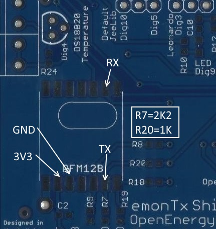

Hi to all!
I'll cut to the chase. I've bought a pre-asembled emonTx shield with an arduino uno. I did all the proper connections and uploaded the following firmware
#include "EmonLib.h"
EnergyMonitor ct1;
const int LEDpin = 9;
void setup()
{
Serial.begin(9600);
Serial.println("emonTX Shield CT123 Voltage Serial Only example");
Serial.println("OpenEnergyMonitor.org");
ct1.current(1, 60.606);
ct1.voltage(0, 220.3, 1.0);
pinMode(LEDpin, OUTPUT);
digitalWrite(LEDpin, HIGH);
}
void loop()
{
ct1.calcVI(11,2000);
// Print power
Serial.print("Vrms:");
Serial.println(ct1.Vrms);
Serial.print("CT1:"); Serial.print(ct1.Irms);
Serial.print(" - ");
Serial.print(ct1.realPower);
Serial.print(" - ");
Serial.print(ct1.apparentPower);
Serial.print(" - ");
Serial.println(ct1.powerFactor);
Serial.println();
delay(2000);
}
Uno is powered from the pc usb port. I've connect a voltmeter to the mains power to get the reading and an amperemeter in series with the phase cable. The load is a heater with two scales. The CT is the YHDC SCT-013-000 and the AC-AC adapter is 8.5V and not 9.0V.
When I compile/run the code the readings I get with a single heating lamp are:
Vrms:132.58
CT1:1.61 - 111.36 - 213.83 - 0.52
while the multimeters display 220.5V and 1.54A.
And with the second lamp on,
Vrms:133.40
CT1:3.20 - 222.32 - 427.35 - 0.52
while the multimeters display 220.3V and 3.08A
As you see the Vrms is way too wrong the current is also wrong but it maybe normal as I haven't done any calibrations yet. I've used an oscillator to see the signal on R14 and it's a 50Hz AC signal with a DC offset of 2.5V and min value of 1.64V and max 3.36V, therefore I suppose there's no problem with the resistor divider.
Anyway I've also printed the values from EnergyMonitor::calcVI() function of the EmonLib.cpp where the Vrms is calculated and still can't figure out what is wrong. The values are the following:
VCAL: 220.30
SupplyVoltage: 5059
ADC_COUNTS: 1024
sumV: 4005907.75
numberOfSamples: 283
Vrms: 129.49
I'm a bit lost here, what's my mistake? I don't think that the 8.5VAC of the adapter is the problem but I don't have a 9VAC to test it. I thought I can use the 8.5V adapter and then make any adjustments by calibrating the paramaters.
I've tried to find the values of the variables that this setup displays meaningful values and I've ended to the following:
ct1.current(1, 58);
ct1.voltage(0, 362.8, 5.4);
Yeah I know, doesn't make sense.
Thank you in advance for any help.
Re: Weird emonTx shield readings
First, the ac adapter will be a problem because the voltage (and hence the power) calibration depends on the adapter giving you 11.6 V out unloaded for 240 V in. Those are the numbers for our standard UK adapter. Your adapter is different, therefore you will need to measure the output voltage and input voltage simultaneously (yes, I know! I mean measure the second and hope the first doesn't change meanwhile) and recalculate the voltage calibration constant accordingly. I see you've changed the constant to a value that's way out, so that explains why your voltage reading is badly wrong. My guess - and it's only an educated guess - is if your adapter is labelled 8.5 V and your mains is exactly on specification at 220 V, then your voltage calibration coefficient is 293 approx, but using the values you measured on the input pin it should be 362.26. Using the latter value, your shield would report 217 V.
That doesn't however affect the current calibration, which is wrong by about 4%, and that's actually just within tolerance, though you can of course alter the current calibration too if you wish. All the details about calibration, both the theory and the procedure, are in Building Blocks.
Re: Weird emonTx shield readings
Thank you for your response.
The adapter is rated at 8.5VAC 230V. I've measured the input voltage at 220.5 VAC and the output was at 8.5. So, if I understand it right it's not a problem to use the 8.5V adapter as long as I use an appropriate voltage coeficient (in my case 362.26). With that coefficient the readings I get are still valid, as it seems to be, correct?
What about the phase shift value which again is way out? It should be within the limits of 1.0 to 2.0 but in my case to get a power factor of 0.99-1.00 I need to use a value of 5.4. Is this ok?
Anyway, my concern is to just get valid readings even if the ac adapter is not the appropriate and the parameters are different from the sketches' defaults. Do you think that is ok if I use the parameters that I get meaningful readings or there's a problem that I can't think of?
Again thank you for your response.
Regards.
Re: Weird emonTx shield readings
The whole purpose of the calibration constants is to correct for differences between what the designer expects and reality, where component tolerances come into play. If you use the "shop" parts, experience tells us that the default values overall are 'good enough' for many people and a good starting point for those who are able to do the full calibration. It's quite in order to change the values, especially when you've identified a reason for the change. (If you can't identify a reason, then that's an indication that something might be wrong, and some fault-finding is called for.)
The ac adapter is, where the Shield is concerned - the emonTx V3 is different, only used to measure the voltage. Any voltage above 1.5 V will do, but you might need to change a resistor if the output is markedly different from 9 V. In your case, 8.5 V is close enough to not warrant changing components even though you are losing a little in resolution.
The phase error is clearly not OK and could be giving you serious errors in the voltage measurement. For why, read Building Blocks about "Explanation of the phase correction algorithm". Basically, you're extrapolating 4.4 samples away. If your mains is a good sine wave, that's OK, but if you experience any distortion - like the 'flat-topping' I see, then it is not good. You can do very little about it without getting a better adapter.
Re: Weird emonTx shield readings
Thanks Robert.
I will try to investigate further on the phase shift parameter and the reason it has to be that large to get a correct power factor. The sine seems pretty good, I think, I will be able to send you a photo later the evening.
Maybe I will also try to change the R13/R14 ratio to get closer to the specs that you've designed.
Of course, I know that it's not the shield's flow or the design, as also its very simple to just buy another AC adapter and everything be just fine. It's just that I'm trying to solve this in order to learn something because many years ago I've studied electronics and I really remember nothing than the ohm and kirchhoff law...
Again thanks for your time.
Regards.
Re: Weird emonTx shield readings
Your phase shift problem unfortunately is a little deeper than that! Basically, it comes down to the design of the transformer. And you'll need to go very deeply into transformer design to understand what's going on there. Even I have to look it up in the text books to remind myself.
As a matter of interest, what frequency is your supply? I've only been able to test the 'shop' adapter at 50 Hz, so I've no idea how it behaves at 60 Hz for example.
I wouldn't change the resistor ratio. Although theoretically it will be better, I don't think you will see any gain. If you think about it, the current inputs usually work over a far smaller input range. You're seeing a range of 1.64 V to 3.36 V in 5 V, that's around 350 counts, and it's only when you get down to inputs of around 15 counts rms that the inherent inaccuracies of the sampling process become significant. If you do change anything, remember you need to cater for the maximum possible mains voltage and the worst case components, and that includes the adapter, divider resistors, the bias resistors and the 5 V supply voltage. It's worth reading what the component tolerances add up to in Building Blocks.
Re: Weird emonTx shield readings
Hi Robert thanks for your reply and excuse my late response as things here i Greece are little weird after the referendum and I spend very little time in home.
Anyway, the mains power supply here in Greece is rated at 230V/50Hz and in my house I have a 3-phase installation. I suppose the phase difference and shift should be ok in my area as there aren't any industries around. Nevertheless the voltage is lower than the rated and I've checked with two different multimeters that gives almost the same readings. I've also checked the house's earth grounding and it's ok. Finally I would like to measure the transformers input and output simultaneously with the oscilloscope but as I remember it's not very good idea to do that with mains power and I don't know if the oscilloscope has a proper protection, maybe I try it with a UPS that gives a "good" sine. I still have to read a lot of stuff.
I also have a socket energy meter (expensive Chinese calibrated equipment that costs 10 euro, lol) that when I use the parameters in the first posts gives almost the exact results. Therefore, it seems to work ok for now but as you've said I should (and I will) go deep down to the problem as it's not robust and very little changes on the mains supply will do alot of difference, especially in the phase shift.
Thanks again Robert.
Re: Weird emonTx shield readings
You say you have a 3 phase supply - you must be measuring the voltage and current for the same phase, or when you move to the 3-phase sketch, then voltage and CT1 must be on the same phase.
Until you have carefully checked, do not try measuring the mains with an oscilloscope. You are very likely to connect mains neutral to earth via your oscilloscope, and that may give a high current in the 'scope probe screened lead, or if you have RCD protection, will trip it. You need an isolating transformer that you can use to feed your ac adapter. Don't be tempted to do what was common practice years ago but which is now illegal (in the UK at least) - disconnect the 'scope earth.
Re: Weird emonTx shield readings
Good morning Robert.
Indeed for the testings I used only one phase sketch with voltage and CT1 on the same phase and of course on real use later they will be on the same phase. I've measured again the transformer and it seems that I was very wrong about the output quality. I will need another transformer to get acceptable results as it's top and bottom are cut-off and maybe this explains the excess phase-shift value I need to use to get meaningful results. You've told me that before but I've trusted my memory that the output was ok, my fault.
Here I post the results (I didn't used the image tag).
CH1:R13/R14, CH2: SEC output (meas: CH1)
http://openenergymonitor.org/emon/sites/default/files/IMG_20150707_11155...
CH1:R13/R14, CH2: SEC output (meas: CH2)
http://openenergymonitor.org/emon/sites/default/files/IMG_20150707_11171...
I've also made a project on PartSim, to check my input voltage against the optimal and the real measured one of my transformer. The difference is around 200mV. Here is the link just for reference.
http://www.partsim.com/simulator/#33724
http://openenergymonitor.org/emon/sites/default/files/8V0.jpg
Therefore, until I get a decent transformer I will proceed with the rest project's target which is to connect the emonTx shield with an ESP8266 wifi module (IoT is hype right now :p) and then interface the energy meter with the EIB/KNX installation of the house and assign group addresses to the meter's output parameters.
I'll come back with the full project.
Robert, thanks again for your help and I appreciate your time.
Regards.
Re: Weird emonTx shield readings
The only thing I would question is, could the mains supply really be that shape? If you look at the report on the Mascot and Ideal ac adapters, you can see that my mains voltage really is 'flat-topped', but not quite so distinctively as yours is. So try looking at the output of any transformer, or even wrap some aluminium foil around a wire to make a low-value capacitor, and look at the shape of that before you conclude that it is all down to the transformer that you have chosen. It just doesn't look quite like what I'd expect for a transformer that's saturating, it's more like an amplifier clipping.
Re: Weird emonTx shield readings
Hi Robert.
Ok, you're right... It seems that it's the network's problem and not the transformer's. I've just tested a 12V ~1200mA AC/AC adapter (Ktec KA23A120120015G) and the results are the same as before, hence I suppose that it's relative.
This is the SEC output.
http://openenergymonitor.org/emon/sites/default/files/12V.jpg
So, what's your opinion on this? Is this something I should worry about in terms of consumption and devices safety or just ignore it? Do you think that this might be the reason for the exceed phase shift parameter value?
Regards.
Re: Weird emonTx shield readings
Sorry for double posting.
I've made some test with the Ktec adapter and the results are much better by calculating the new calibration value as below.
ct1.voltage(0, 215.2, 1.25);
Now also the phase shift parameter is within the limits and gives very good results.
Vrms on multimeter: 232.6
VCAL: 215.20
SupplyVoltage: 5059
ADC_COUNTS: 1024
sumV: 13521581.00
numberOfSamples: 282
Vrms: 232.81
CT1:1.62 - 375.25 - 376.44 - 1.00
Re: Weird emonTx shield readings
"So, what's your opinion on this? Is this something I should worry about in terms of consumption and devices safety or just ignore it? Do you think that this might be the reason for the exceed phase shift parameter value?"
I'm not sure what you're asking there. If it is 'Is the Ktek adapter going to have an excessive losses because it is rated at 1200 mA?' - possibly, but not necessarily. There are two components to transformer losses, those related to the transformer itself, and those related to the current it is delivering. You have (almost) zero secondary current, so the only losses are the transformer's own. If it gets warm in use, then it might be something to consider. If it runs cold, it's probably nothing to worry about. Obviously, you'd prefer zero losses but that's not possible given the need to put safety first.
If you are asking 'Is the excessive phase shift and excessive loss in the 8.5 V adapter linked?', then quite possibly they are!
If you're going to continue with the Ktek adapter, you just need to make sure that you don't have excessive volts at the ADC input at maximum mains voltage (which I think should be 230 V + 10% = 243 V).
Re: Weird emonTx shield readings
Hi Robert.
You've fully covered all my questions. It seems that I will continue with the Ktek adapter as I finally get meaningful results, therefore; the only thing is left is to calibrate the CT parameter to get more precise current readings.
Also I've noticed that the 8.5V adapter was running too hot even without a load. After 2 days on the mains power of which the last day was unconnected, it was so hot I could barely hold it for couple of seconds. It's obvious that the transformer has problem.
Thank you for your advices and support!
Re: Weird emonTx shield readings
Hi again Robert.
Everything is fine now and while I'm finished with my little project I'm posting the code here for anyone who needs to interface the emonTx shield with an ESP8266 (is a cheap but excellent wifi transceiver with embedded tcp/ip stack) and retrieve UDP packets on a certain IP and port (I use a raspberry pi to listen to the UDP packets).
The sketch is here:
http://openenergymonitor.org/emon/sites/default/files/ard_energy_meter.ino
Some brief notes on the code and shield. To use it you need to connect the ESP8266 module to the RFM12B pads and the following image shows how.

TX. RX are the signals from the ESP8266. Also you have to replace resistors R7 and R20 as their value are too large to use for level translator, therefore R7 must be replaced with a 2K2 resistor and R20 with an 1K.
Also depending the Arduino board (mine is R3 UNO), it's 3V3 supply current may not be enough to drive the ESP8266. In my case there wasn't any problem but I've red that some people did have problems. Anyway, in that case you may need an AMS1117-3.3 or something similar to power the ESP8266 but I think it's no need to cover it here.
Finally, in the sketch you only have to edit the AP_SSID, AP_PASSWD, AP_SERVER_IP and AP_SERVER_PORT definitions with the ones that meet your Access Point and network setup. These values are stored also in the internal EEPROM, that's though are for mine future needs, so don't mind them. Also to enable or disable the debug output of the wifi module comment in or out the DEBUG_WIFI definition.
I hope I've explained it well enough.
Regards.